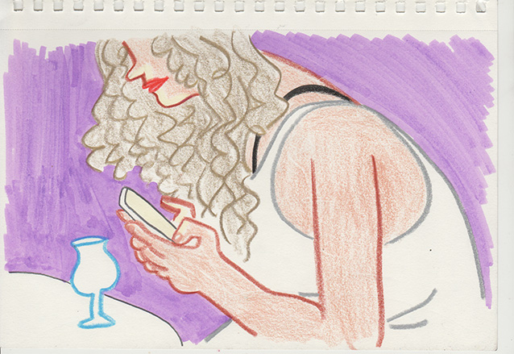
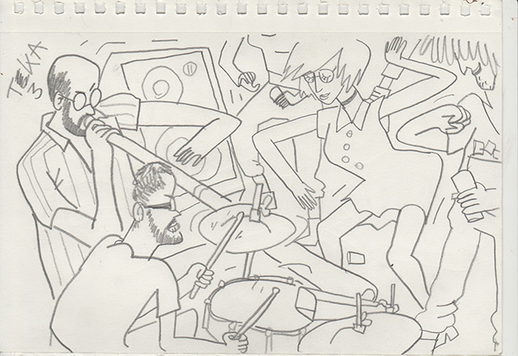

GENTSE FEESTEN 2017
A diary of drawings from the Ghent festival 2017. I didn't make it all days, but I tried my best. Click on any image or day number for a full gallery of that day.
DAY 0

warming up at the HOT CLUB DE GAND
DAY 1
some stage builders at laurentplein
GRUUT drinkers
the wonderful vibes of UMM
some crazy energy and action from the VAGABUNDOS
DAY 2
b-boys showing off in the streets
a spontaneous bachelorette party led by THE FLOATERS
chilling with the awesome crew from KAPOW
st. jakobs and some collaborative drawings of partying people in the AFSNIS with the lovely CAMILLA
DAY 3

chill vibes again from KAPOW
a dissapointing lunch at HAIPHONG HAPPINESS
some beautiful people at vrijdagmarkt and baudelopark
the insane show of T3KA
the alluring sirens of the VEDETT party bus
DAY 4
a humorous real-life-internet experience by CIRQ
bellydance classes at baudelopark
some drawing with SOFIE, TELMA and CAMILLA
some soulful vibes by BASTARD SOUL
insane italian energy from BARO DROM ORKESTAR
DAY 5
beautiful latin jazz from COMBO DEL FUEGO
a blue piano in st. michielskerk
breakdance battle hosted by STREET FACTS/TOGETHER WE STAND
another great show from T3KA and "guests"
ambulance and undercover police action
a final whisky at the HOT CLUB DE GAND
DAY 6
some great soul tunes spun by ROCKETSOULand MR. HANZO in the beautiful garden of the BAR MITTE
some crazy acrobatics from CIRCUS PLANEET
cocktails on the balcony
beatbox madness from SERDI
PAVLOVE playing some covers
the MIRY CONCERTZAAL from outside
fire spinning and juggling at baudelopark
exstatic drunk people (including myself) at st. jakobs and vlasmarkt
DAY 8
a coffee at NTGENT
being pestered by OXFAM promoters
a moment of panic
flexing belgian POLICE
scratching, cutting and bbqing with the awesome ZAMI ZULI and friends
DAY 9
hiding from the rain in the spiegeltent
DAY 10
an epic finale of jamming at the forever awesome KAPOW
going out in style drinking like a FIISH